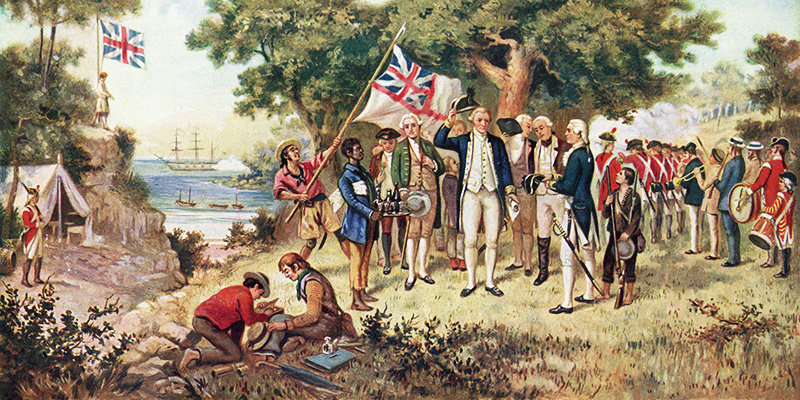
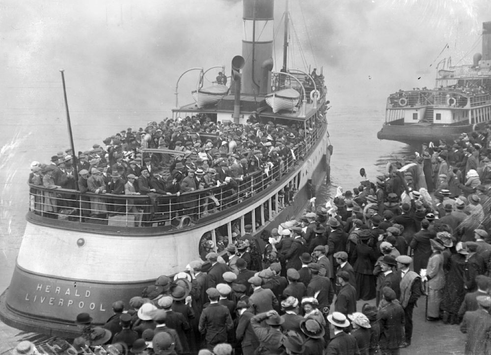

L'area che circonda il Sydney Harbour è stata abitata, per almeno 45 000 anni, da diverse tribù aborigene, che la chiamavano Warrane; le principali tribù della zona erano gli Eora e i Cadigal. Benché l'urbanizzazione abbia cancellato la maggior parte delle tracce di questi insediamenti, si trovano ancora dipinti rupestri in alcune zone. Gli europei iniziarono a interessarsi della zona a partire dal 1770, anno in cui il capitano James Cook avvistò Botany Bay (oggi un sobborgo meridionale di Sydney). Per ordine del governo britannico, nel 1788 Arthur Phillip fondò in questa zona un insediamento carcerario. Phillip sbarcò inizialmente a Botany Bay, ma decise poi di far vela verso nord e fondò l'insediamento definitivo a Sydney Cove, presso Port Jackson.
Attorno all'insediamento iniziò presto a formarsi una piccola città, che venne via via popolata da immigranti in cerca di nuova vita. Già nel 1822 Sydney aveva banche e mercati; nel 1847, i detenuti costituivano ormai solo il 3,2 percento della popolazione. Un'ondata particolarmente importante di immigrati ebbe luogo durante la corsa all'oro del 1851. Con l'industrializzazione, l'espansione della città ha accelerato, e all'inizio del XX secolo la popolazione complessiva superava di parecchio il milione. Sydney ha continuato per tutto il secolo a espandersi e accogliere nuove ondate di immigrati, prima europei e poi anche asiatici, che hanno contribuito a creare l'atmosfera cosmopolita di oggi.
La città di Sydney fiorì rapidamente, con la costruzione di impressionanti edifici pubblici che ben si addicevano a un’emergente potenza marittima. Nel 1901, in mezzo a un nazionalismo crescente, la Federazione riunì insieme le sei colonie del Paese e il Nuovo Galles del Sud divenne uno degli stati dell’Australia. Nei suoi due secoli di colonizzazione europea, Sydney ha sperimentato periodi alterni di crescita e declino. Ha resistito agli effetti della corsa all’oro e al boom del commercio, alle depressioni e alle guerre mondiali, per divenire una città particolare, caratterizzata da un vibrante eclettismo. Il sottotesto di cultura inglese, combinato con le influenze aborigene e le successive ondate di migrazione asiatica ed europea, hanno dato luogo alla moderna città cosmopolita che conosciamo oggi.